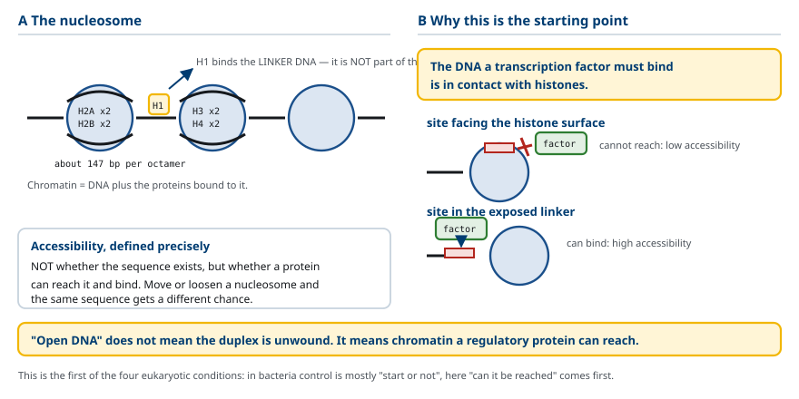
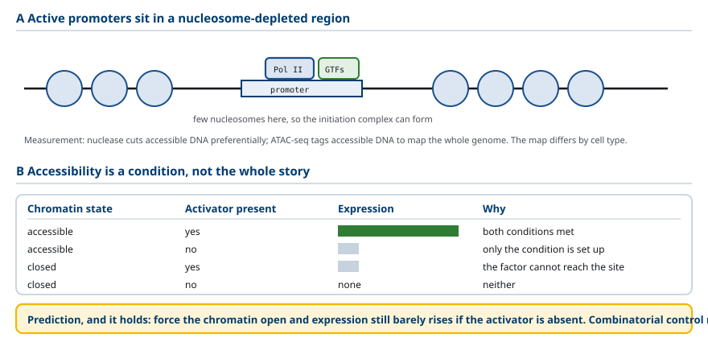
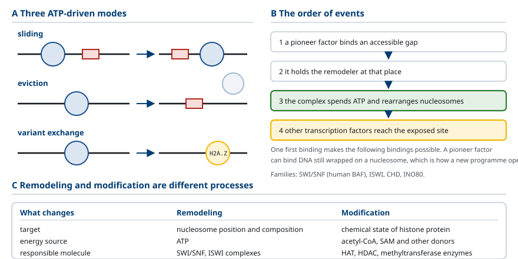
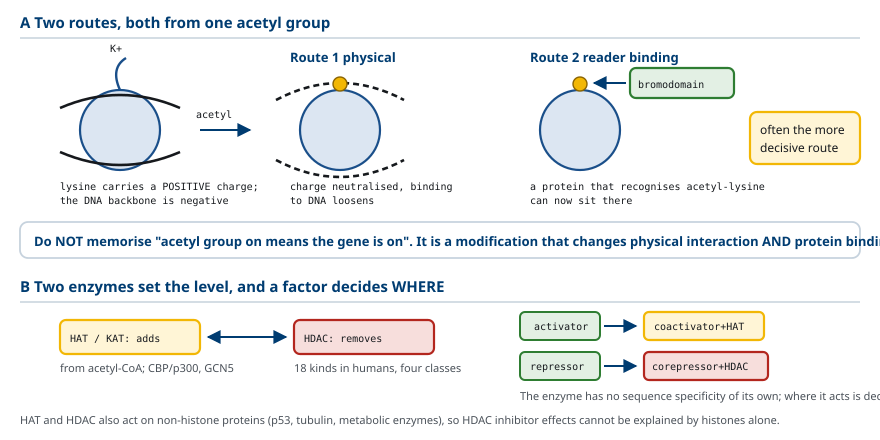
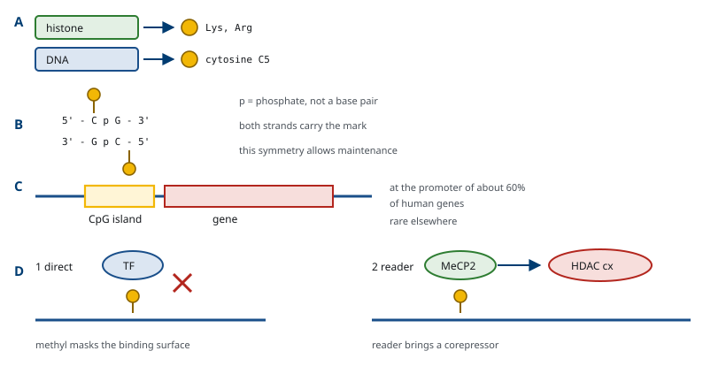
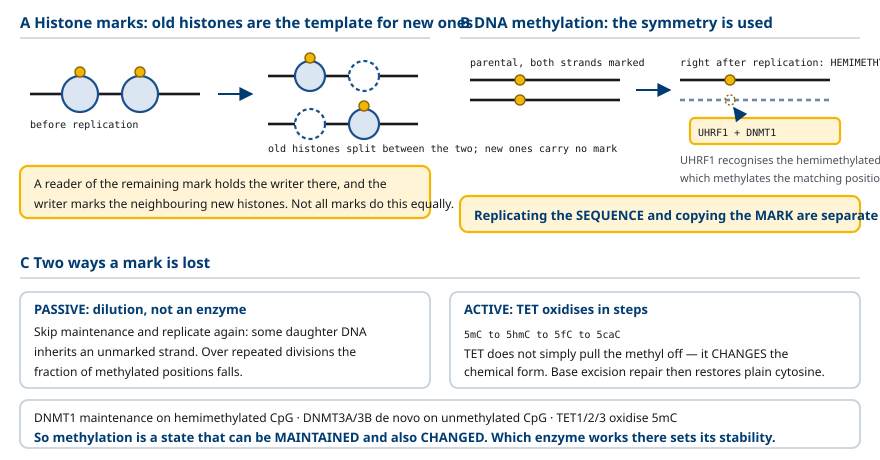

M03-W05-L01 · 분자유전학과 계통별 의학생화학특론
후성유전 조절 — DNA methylation과 histone 수식
Epigenetic Regulation: DNA Methylation and Histone Modification
학습목표
- Nucleosome의 구성을 쓰고 H1이 중심 팔량체의 구성 성분이 아니라는 점을 구분한다.
- DNA 접근성을 '서열이 있는지'가 아니라 '단백질이 그 서열에 도달해 결합하기 쉬운지'의 문제로 정의한다.
- 활성 promoter 주변의 접근 가능 영역이 뜻하는 바를 쓰고 DNA를 열어도 발현이 늘지 않을 수 있는 조건을 예측한다.
- Chromatin 재구성 복합체의 작용을 쓰고 nucleosome의 이동과 histone에 화학기를 붙이는 일을 구분한다.
- Histone acetylation이 전사에 영향을 주는 두 경로를 전하 변화와 reader 결합으로 나누어 설명한다.
- Writer, reader, eraser의 역할을 구분하고 '표지는 스스로 판단하지 않는다'는 원리를 설명한다.
- H3K4me3와 H3K27me3를 표기 규칙에 따라 읽고 'methylation은 억제'라는 일반화가 성립하지 않는 이유를 쓴다.
- DNA methylation의 화학적 실체를 쓰고 histone methylation과 표적 분자가 다르다는 점을 구분한다.
- 복제 뒤 histone 표지의 재형성과 DNMT1에 의한 유지 methylation을 설명하고 수동적·능동적 탈methylation을 구분한다.
- 분자 표지의 변화, 체세포 분열 뒤의 상태 유지, 세대 간 전달을 구분하고 세 가지를 한꺼번에 '기억'으로 묶지 않는 이유를 쓴다.
선수지식
- M03-W04-L03 전사인자·enhancer와 조절 네트워크 — 공동억제인자, 억제의 세 방식, 조합 조절
- M03-W04-L02 유전자 발현 조절의 원리와 조절 단위 — 진핵세포의 네 조건
- M01-W06-L02 유전자와 유전체의 구성 — chromatin의 기본 구조
강의 구성
- 1. Nucleosome과 DNA 접근성이라는 문제
- 2. 접근 가능 영역과 그것만으로 부족한 이유
- 3. Chromatin 재구성 복합체
- 4. Histone acetylation과 HAT·HDAC
- 5. Writer, reader, eraser
- 6. Histone methylation과 표지를 읽는 법
- 7. DNA methylation: 표적이 다른 methylation
- 8. 분열을 넘어 상태를 유지하는 기전
- 9. 상태 유지의 세 사례: Polycomb, 각인, X 불활성화
- 10. 암의 후성유전 이상, 그리고 세 가지를 구분하기
1. Nucleosome과 DNA 접근성이라는 문제
진핵세포의 DNA는 벌거벗은 상태로 있지 않다. 단백질과 결합해 chromatin을 이루며, 그 기본 단위가 nucleosome이다.
Nucleosome에서는 약 147 염기쌍의 DNA가 histone 팔량체를 감는다. 팔량체는 H2A, H2B, H3, H4가 각각 두 분자씩 모인 구조다. 이 단위와 그 사이의 연결 DNA가 반복되면서 긴 DNA가 정리된다.
여기서 흔히 혼동되는 점을 바로잡아야 한다. H1은 중심 팔량체의 구성 성분이 아니다. H1은 nucleosome 사이의 연결 DNA에 결합해 더 높은 차수의 구조를 만드는 데 관여하는 별개의 histone이다. '다섯 종류의 histone'이라고 묶어 외우면 팔량체의 구성을 잘못 기억하게 된다.
Chromatin의 포장은 단순히 DNA를 정리하는 수단이 아니다. 이 단원의 출발점이 되는 사실은 다음과 같다. 전사인자가 결합해야 할 DNA가 histone과 접촉하고 있다.
전사인자는 DNA의 특정 서열과 직접 접촉해야 결합한다. 그런데 그 서열이 histone 표면을 향하고 있거나 nucleosome에 가려져 있으면 결합이 어려워진다. 이 차이를 DNA 접근성(DNA accessibility) 이라 한다.
접근성의 정의를 정확히 해야 한다. 접근성은 서열이 존재하는지의 문제가 아니라, 단백질이 그 서열에 도달해 결합하기 쉬운지의 문제다. 같은 조절서열이라도 nucleosome이 이동하거나 잠시 풀리면 접근 기회가 달라진다.
'열린 DNA'라는 표현도 이 뜻으로 쓴다. DNA 이중나선이 풀렸다는 뜻이 아니라, 조절 단백질이 접근하기 쉬운 chromatin 상태를 가리킨다.
이 문제가 앞 수업에서 본 진핵세포의 네 조건 가운데 첫 번째였다. 세균의 DNA는 비교적 자유롭게 접근할 수 있으므로 조절이 'promoter에서 전사를 시작할지'에 집중된다. 진핵세포에서는 그보다 앞선 질문, '그 서열에 도달할 수 있는지'가 먼저 해결되어야 한다.

2. 접근 가능 영역과 그것만으로 부족한 이유
활성 유전자의 promoter 주변에서는 nucleosome이 적거나 배열이 달라진 영역이 관찰된다. 이 영역에 전사인자와 일반 전사인자가 결합하면 개시 복합체를 만들기 쉬워진다.
이 성질 때문에 접근성은 실험으로 측정할 수 있는 지표가 된다. Nuclease로 처리했을 때 잘 잘리는 구간이 접근 가능한 구간이고, 오늘날에는 ATAC-seq처럼 접근 가능한 DNA에 선택적으로 표지를 넣는 방법으로 유전체 전체의 접근성 지도를 만든다. 세포 종류마다 접근 가능 영역의 분포가 다르고, 그 분포가 그 세포의 조절 상태를 반영한다.
그런데 여기서 반드시 붙여야 할 단서가 있다. DNA가 접근 가능하다고 해서 필요한 단백질이 자동으로 생기는 것은 아니다.
결합할 전사인자가 없으면 접근 가능한 상태에서도 발현이 낮게 남는다. 따라서 접근성은 전사 기계가 일할 수 있게 하는 조건이고, 실제 전사에는 적절한 인자도 함께 있어야 한다.
이 구분에서 검증 가능한 예측이 나온다.
이 예측은 실제로 확인된다. CRISPR 기반 도구로 특정 부위의 chromatin을 열어 주는 실험에서, 그 세포가 해당 활성인자를 가지고 있을 때만 발현이 크게 올라간다. 역방향 실험도 성립한다.
앞 수업의 조합 조절이 여기서 한 층 확장된다. 조합에 들어가는 입력이 전사인자들만이 아니라 chromatin 상태까지 포함한다. 면역글로불린 enhancer의 예에서 'B 세포에서는 적절한 조절인자와 chromatin 상태가 함께 갖추어진다'고 한 것이 이 뜻이다.

3. Chromatin 재구성 복합체
접근성이 조절 대상이라면 그것을 바꾸는 장치가 있어야 한다. 그 장치가 chromatin 재구성 복합체(chromatin remodeling complex) 다.
작동 방식은 다음과 같다. 이 복합체는 ATP의 에너지를 써서 DNA와 histone의 상호작용을 바꾼다. 그 결과 nucleosome을 이동시키거나(sliding), 제거하거나(eviction), histone 구성을 바꾼다(변이체 교환). 조절서열이 노출되면 전사인자가 결합할 기회가 늘어난다.
대표적인 계열이 SWI/SNF다. 사람에서는 BAF 복합체라 부르며 여러 소단위로 이루어진다. 그 밖에 ISWI, CHD, INO80 계열이 있고 각각 선호하는 작용이 다르다.
작용의 순서를 보면 조절의 논리가 보인다.
1. 서열 특이적 조절 단백질이 접근 가능한 틈에 결합한다. 2. 그 단백질이 재구성 복합체를 그 자리에 머물게 한다. 3. 복합체가 ATP를 써서 nucleosome 배열을 바꾼다. 4. 노출된 서열에 다른 전사인자가 접근한다.
즉 처음 하나의 결합이 뒤따르는 결합들을 가능하게 한다. 이런 전사인자를 선도 인자(pioneer factor)라 하며, nucleosome에 감긴 DNA에도 결합할 수 있는 성질을 가진다. 분화 과정에서 새로운 발현 프로그램을 여는 역할을 한다.
여기서 중요한 구분을 세워야 한다. Nucleosome을 이동시키는 일과 histone에 화학기를 붙이는 일은 서로 다른 과정이다.
| 비교 항목 | 재구성 (remodeling) | 수식 (modification) |
|---|---|---|
| 바꾸는 대상 | nucleosome의 위치와 구성 | histone 단백질의 화학적 상태 |
| 에너지 | ATP 필요 | acetyl-CoA, SAM 등 공여체 필요 |
| 담당 분자 | SWI/SNF, ISWI 등 복합체 | HAT, HDAC, methyltransferase 등 효소 |
| 직접 효과 | 물리적 노출의 변화 | 전하와 결합 표면의 변화 |
두 과정은 흔히 함께 일어나고 서로를 유도하지만, 기전이 다르므로 분리해 이해해야 한다.
마지막으로 단서를 하나 더 붙인다. 모든 재구성이 활성화를 일으키는 것은 아니다. Nucleosome을 조절서열 위로 옮겨 접근을 막는 방향으로도 작동하며, 억제 복합체가 재구성 활성을 가지는 경우도 있다.

4. Histone acetylation과 HAT·HDAC
Histone의 N 말단 꼬리는 nucleosome 바깥으로 뻗어 있고, 여기에 여러 화학기가 붙을 수 있다. 가장 먼저 밝혀지고 가장 널리 쓰이는 수식이 acetylation이다.
Histone 꼬리의 lysine 잔기는 양전하를 띤다. DNA의 인산 골격은 음전하이므로 둘 사이에 정전기적 인력이 작용한다. Lysine에 acetyl기가 붙으면 이 양전하가 중화되어 DNA와의 상호작용이 약해진다.
그런데 acetylation의 효과는 전하 변화 하나로 끝나지 않는다. 두 경로가 함께 작동한다.
- 경로 1: 물리적 상호작용의 변화. 양전하가 중화되어 histone과 DNA의 결합이 느슨해지고, nucleosome 사이의 상호작용도 약해진다.
- 경로 2: reader 단백질 결합의 변화. Acetylation된 lysine을 인식하는 결합 도메인(bromodomain)을 가진 단백질들이 그 자리에 결합할 수 있게 된다.
두 번째 경로가 조절에서 더 결정적인 경우가 많다. 하나의 화학적 변형이 다른 단백질을 그 자리에 머물게 하는 신호가 되기 때문이다.
따라서 외우는 방식을 조정해야 한다. 'acetyl기가 붙으면 무조건 유전자가 켜진다'로 외우지 않는다. 정확히는 물리적 상호작용과 조절 단백질의 결합을 바꾸는 변형이며, 그 결과가 많은 경우 전사가 활발한 chromatin과 연결된다.
Acetylation 수준을 정하는 것은 반대 방향으로 작용하는 두 종류의 효소다.
- HAT(histone acetyltransferase, KAT로도 표기): acetyl-CoA로부터 acetyl기를 lysine에 붙인다. CBP/p300, GCN5 계열이 대표적이다.
- HDAC(histone deacetylase): 붙어 있는 acetyl기를 제거한다. 사람에서 18종이 알려져 있고 네 부류로 나뉜다.
이 효소들이 조절과 연결되는 방식이 앞 수업에서 본 구조다. 전사인자가 이 효소들과 상호작용하면 특정 유전자 주변의 acetylation을 바꿀 수 있다. 활성인자가 HAT를 포함한 공동활성인자를 데려오고, 억제인자가 HDAC를 포함한 공동억제인자를 데려온다. 효소 자신은 서열 특이성이 없고, 어디서 작용할지는 데려온 단백질이 정한다.
한 가지 더 알아 둘 점이 있다. HAT와 HDAC는 histone 외의 단백질에도 작용한다. p53, tubulin, 대사 효소를 포함한 많은 단백질의 lysine이 acetylation된다. 그러므로 HDAC 억제제의 효과를 histone 변화만으로 설명할 수 없다.

5. Writer, reader, eraser
Histone 수식을 다루는 분자들을 세 가지 역할로 나누면 체계가 잡힌다. 이 이름은 서로 다른 효소의 분류가 아니라 같은 표지를 둘러싼 서로 다른 기능을 가리킨다.
- Writer: histone에 표지를 붙인다. HAT, histone methyltransferase가 여기 속한다.
- Reader: 특정 표지가 있는 자리를 인식해 결합한다. Bromodomain(acetyl-lysine 인식), chromodomain과 PHD finger(methyl-lysine 인식)를 가진 단백질들이다.
- Eraser: 붙어 있는 표지를 제거한다. HDAC, histone demethylase가 여기 속한다.
이 구분에서 이 수업 전체의 핵심 원리가 나온다.
이 원리가 설명하는 것이 두 가지 있다.
첫째, 같은 표지가 맥락에 따라 다른 결과를 낳을 수 있다. 그 표지를 읽는 reader가 어떤 것이고 그 reader가 무엇과 결합하는지에 따라 결과가 달라진다. 세포 종류에 따라 reader의 구성이 다르면 같은 표지의 의미도 달라진다.
둘째, 하나의 화학적 변형이 큰 조절 복합체의 형성으로 증폭된다. Writer가 표지를 붙이면 reader가 결합하고, reader가 다른 writer나 재구성 복합체를 데려오면 그 작용이 주변으로 퍼진다. 작은 입력이 넓은 영역의 상태 변화로 이어지는 구조다.
여기서 읽기와 쓰기가 짝지어 작동하는 경우가 특히 중요하다. 어떤 복합체는 자신이 만드는 표지를 자신이 인식하는 도메인을 함께 가진다. 그러면 표지가 있는 곳에서 그 복합체가 더 잘 머물고, 머물면 표지를 더 만든다. 이 양성 되먹임이 표지가 영역으로 퍼지고 유지되는 기전이며, 8절에서 다시 다룬다.

6. Histone methylation과 표지를 읽는 법
Histone 수식의 종류는 여럿이다. 주요한 네 가지 화학기와 그 성질은 다음과 같다.
| 화학기 | 붙는 잔기 | 전하 변화 | 가역성 | 주된 연관 |
|---|---|---|---|---|
| Acetyl | lysine | 양전하 중화 | 빠름 | 활성 chromatin |
| Methyl | lysine, arginine | 없음 | 느림 | 위치에 따라 다르다 |
| Phosphate | serine, threonine | 음전하 추가 | 빠름 | 분열, DNA 손상 반응 |
| Ubiquitin | lysine | 큰 부가 | 중간 | 억제와 수선에 모두 관여 |
여기서 methylation이 전하를 바꾸지 않는다는 점이 중요하다. 따라서 methylation의 효과는 물리적 결합의 변화로 설명되지 않고, 거의 전적으로 reader 단백질의 결합을 통해 나타난다. 앞 절의 원리가 가장 선명하게 적용되는 경우다.
표지의 표기 규칙을 먼저 익혀야 한다.
H3K4me3 = H3(histone의 종류) + K4(네 번째 lysine) + me3(메틸기 세 개)
즉 '히스톤 H3의 네 번째 lysine에 메틸기 세 개가 붙었다'는 뜻이다. 같은 방식으로 H3K27me3는 H3의 27번째 lysine이 세 번 methylation된 표지다.
두 표지는 둘 다 methylation이지만 인식하는 단백질과 연관 상태가 전혀 다르다.
- H3K4me3: 활성 promoter에 집중된다.
- H3K27me3: Polycomb이 만드는 억제 영역에 분포한다.
여기서 반드시 버려야 할 일반화가 있다. 'methylation은 억제'라는 한 문장으로 histone 수식을 설명할 수 없다. 표지의 정확한 위치(어느 histone의 몇 번 잔기인지)와 종류(메틸기 몇 개인지)를 읽어야 한다. 메틸기의 개수도 의미를 바꾼다. H3K4me1은 enhancer에, H3K4me3은 활성 promoter에 주로 분포한다.
표지를 쓰는 방식에 주의가 필요하다. 실험에서 표지를 측정하면 어떤 조절 상태와 연결되어 있는지 후보를 세울 수 있다. 그러나 그 표지가 발현 변화의 원인인지를 알려면 추가 실험이 필요하다. 관련 효소를 없애거나 그 조절 부위를 바꾸었을 때 발현이 달라지는지를 확인해야 한다. 상관을 인과로 바로 바꾸어 읽지 않는다.
표지의 측정은 ChIP(chromatin immunoprecipitation)으로 한다. 표지에 특이적인 항체로 그 표지를 가진 chromatin 조각을 끌어내고, 붙어 있던 DNA의 서열을 읽어 유전체 위의 분포를 정한다. 실습 수업에서 원리를 다룬다.

7. DNA methylation: 표적이 다른 methylation
DNA methylation도 methylation이지만 표적 분자가 다르다. 이 구분이 이 절의 출발점이다.
- Histone methylation: 단백질의 lysine이나 arginine 잔기에 메틸기를 붙인다.
- DNA methylation: DNA 염기인 cytosine에 메틸기를 붙인다.
포유류에서는 cytosine의 5번 탄소에 메틸기가 붙어 5-methylcytosine(5mC) 이 된다. 붙는 위치는 주로 CpG다.
CpG의 의미를 정확히 해야 한다. CpG는 같은 DNA 가닥에서 C 다음에 G가 오는 배열을 뜻한다. 가운데 p는 두 염기를 잇는 인산을 가리키며, C와 반대 가닥의 G가 짝을 이룬다는 뜻(C-G 염기쌍)과 구별하기 위해 쓴다.
CpG가 이 배열이기 때문에 생기는 성질이 있다. CpG의 반대 가닥도 CpG이므로, 두 가닥이 대칭적으로 methylation될 수 있다. 이 대칭성이 뒤에서 볼 유지 기전의 토대가 된다.
DNA methylation은 돌연변이와 다르다. 염기서열을 다른 염기로 바꾸는 것이 아니라 기존 염기에 화학기를 붙이는 것이다. 따라서 염기서열을 읽는 일반적인 서열 분석으로는 검출되지 않고, bisulfite 처리처럼 methylation 상태를 염기 변화로 바꾸는 전처리가 필요하다.
CpG island는 CpG의 밀도가 주변보다 높은 구간이며, 사람 유전자의 약 60%의 promoter에 있다. 유전체 전체에서 CpG는 예상보다 드문데(5mC가 탈아미노화되면 T가 되어 오랜 시간에 걸쳐 CpG가 소실되었다), CpG island는 그 소실을 겪지 않은 구간이다. 이는 그 구간이 대부분의 세포에서 methylation되지 않은 상태로 유지되어 왔음을 뜻한다.
Promoter CpG island의 methylation이 전사를 낮추는 기전은 두 가지다.
기전 1: 전사인자의 결합을 직접 방해한다. 일부 전사인자는 자신의 인식 서열에 메틸기가 붙어 있으면 결합하지 못한다. 메틸기가 결합 표면을 물리적으로 가린다.
기전 2: methyl-CpG 결합 단백질이 억제 복합체를 데려온다. MeCP2, MBD 계열 단백질이 methylation된 CpG를 인식해 결합하고, HDAC를 포함한 공동억제인자나 chromatin 조절인자와 결합한다. 앞 절의 reader 원리가 DNA 표지에도 적용되는 것이다.
두 기전 가운데 두 번째가 더 넓은 범위에 작용한다. 하나의 결합에서 시작한 chromatin 변화가 주변으로 퍼질 수 있기 때문이다.
여기에도 단서를 붙여야 한다. DNA methylation이 언제나 억제를 뜻하지는 않는다. 유전자 본체(gene body)의 methylation은 활발히 전사되는 유전자에서 오히려 높고, 다음 절에서 볼 각인 조절영역에서는 methylation이 CTCF의 결합을 막아 enhancer의 작용 범위를 바꾸는 방식으로 작동한다. 따라서 methylation 자료를 볼 때 어느 DNA 부위의 methylation을 측정했는지 먼저 확인해야 한다.

8. 분열을 넘어 상태를 유지하는 기전
분화한 세포는 분열한 뒤에도 자신의 발현 상태를 유지한다. 간세포가 분열했다고 딸세포가 갑자기 신경세포의 유전자만 발현하지는 않는다.
이것이 후성유전학이 묻는 질문이다. DNA 서열이 같을 때 발현 상태를 어떻게 유지하는가.
용어를 정확히 써야 한다. 이 현상을 '세포 기억'이라 부르기도 하지만, 세포가 경험을 생각한다는 뜻이 아니다. 특정 유전자군의 활성 또는 억제 상태가 분열 후에도 이어지는 현상을 가리킨다.
유지에는 두 층위가 함께 관여한다. 전사인자 회로 자체의 자기 유지와, 이 절의 주제인 chromatin 표지의 재형성이다.
Histone 표지의 재형성. DNA 복제에서 기존 nucleosome이 분해되고 다시 조립되는 동안, 기존 histone의 일부가 두 자손 DNA에 나뉘어 배치되고 새로 합성된 histone도 들어온다. 새 histone에는 원래와 같은 표지가 처음부터 붙어 있지 않다.
복원은 5절에서 본 읽기와 쓰기의 짝으로 이루어진다. 기존 표지를 인식하는 reader가 변형 효소를 그 자리에 머물게 하면 그 효소가 주변의 새 histone에도 같은 표지를 만든다. 남아 있는 표지가 새 표지의 주형 구실을 한다. 다만 모든 표지가 같은 방식으로 안정하게 전달되는 것은 아니다. H3K27me3와 H3K9me3처럼 읽기–쓰기 짝이 분명한 표지는 비교적 안정하게 복원되지만 acetylation처럼 회전이 빠른 표지는 그렇지 않다.
DNA methylation의 유지. 7절에서 본 CpG의 대칭성이 여기서 쓰인다. 복제 직후 각 자손 DNA는 기존 가닥 하나와 새 가닥 하나를 가진다. 기존 가닥의 CpG가 methylation되어 있었다면 그 표지는 남지만, 새 가닥의 대응 위치에는 아직 메틸기가 없다. 이 상태를 반메틸화(hemimethylated) 라 한다.
DNMT1과 UHRF1이 이 상태를 인식한다. UHRF1이 반메틸화된 CpG를 알아보고 DNMT1을 데려오면, DNMT1이 새 가닥의 대응 위치에 메틸기를 붙인다. 이것이 유지 methylation(maintenance methylation) 이다.
여기서 중요한 결론이 나온다. 서열의 복제와 표지의 복사는 별개의 과정이다. DNA 합성은 polymerase가 하고, 표지의 복사는 DNMT1이 한다. 둘 중 하나만 실패할 수 있다.
유지에 실패하면 어떻게 되는가. 새 가닥에 메틸기를 보충하지 않은 상태에서 다시 복제하면, methylation이 전혀 없는 가닥을 물려받는 DNA도 생긴다. 반복 분열 동안 methylation된 위치의 비율이 점차 낮아진다. 이를 수동적 탈methylation(passive demethylation) 이라 한다. 메틸기를 떼는 효소의 작용이 아니라 희석의 결과다.
능동적 탈methylation은 별개의 기전이다. TET 효소가 5mC를 5hmC → 5fC → 5caC로 단계적으로 산화한다. 여기서 정확한 이해가 필요하다. TET는 메틸기를 그냥 떼어내는 것이 아니라 메틸화된 염기의 화학적 형태를 바꾼다. 그 뒤 염기절단수선이 산화된 염기를 제거하고 비변형 cytosine으로 바꾸는 데 관여한다. 산화된 표지는 복제에 따라 희석될 수도 있다.
세 종류의 효소를 구분해 두어야 한다.
| 효소 | 역할 | 작용 대상 |
|---|---|---|
| DNMT1 | 유지 methylation | 반메틸화된 CpG (UHRF1과 함께) |
| DNMT3A, DNMT3B | 새로운 methylation (de novo) | 메틸화되지 않은 CpG |
| TET1·2·3 | 5mC의 산화 | 메틸화된 cytosine |

9. 상태 유지의 세 사례: Polycomb, 각인, X 불활성화
유지 기전이 실제로 무엇을 하는지는 세 사례에서 분명해진다.
사례 1: Polycomb과 발달 유전자의 억제. 분화한 세포는 지금 필요하지 않은 발달 유전자들의 발현을 낮게 유지해야 한다. 간세포가 신경 발생 유전자를 켜지 않도록 억제 상태를 이어 가야 한다.
PRC2가 H3K27me3를 만들고, 일부 PRC1 복합체가 그 표지를 인식해 histone ubiquitination과 chromatin 압축을 수행한다. PRC2가 자신이 만든 표지를 인식하는 소단위를 함께 가진다는 점이 5절의 양성 되먹임에 해당한다. 표지가 있는 곳에서 더 잘 머물고, 머물면 표지를 더 만든다. 이것이 억제 영역이 분열을 넘어 유지되는 근거다. 모든 PRC1이 같은 방식으로 결합하지는 않는다.
사례 2: 유전체 각인(genomic imprinting). 체세포는 보통 어머니와 아버지에서 온 유전자 사본을 하나씩 가진다. 일부 각인 유전자에서는 두 사본의 발현이 대등하지 않고, 어느 부모에서 왔는지에 따라 특정 사본을 주로 발현한다.
이 차이는 부모가 전달한 염기서열의 차이가 아니라 조절영역의 methylation 등 표지의 차이에서 온다. 그리고 생식세포 형성 과정에서 기존 각인 양상을 지우고 성별에 맞게 다시 설정한다. 체세포 분열에서의 유지와 생식세포에서의 재설정을 구분해야 한다.
H19/IGF2가 교과서적인 예다. 두 유전자가 같은 구역에 있고 하나의 enhancer 집합을 공유한다. 둘 사이에 각인 조절영역이 있다.
- 모계 사본: 각인 조절영역이 methylation되어 있지 않다. 따라서 CTCF가 결합할 수 있고, 앞 수업에서 본 경계 기능이 작동해 enhancer가 IGF2에 작용하는 것을 제한한다. 결과적으로 H19가 발현된다.
- 부계 사본: 해당 영역이 methylation되어 CTCF의 결합을 방해한다. 경계가 없으므로 enhancer가 IGF2와 접촉할 수 있고, IGF2가 발현된다.
이 사례의 교육적 가치가 크다. 'DNA methylation이 주변 모든 유전자를 똑같이 끈다'는 설명의 한계를 보여 준다. 여기서 methylation은 유전자를 직접 끄는 것이 아니라 CTCF의 결합을 막아 enhancer의 작용 범위를 바꾼다. 같은 표지도 어느 조절영역에 있고 그 영역에서 어떤 단백질의 결합을 바꾸는지에 따라 결과가 달라진다. 결합하는 단백질과 접촉 관계를 함께 읽어야 한다.
사례 3: X 염색체 불활성화. 포유류의 XX 세포에서는 한 X 염색체의 많은 유전자를 억제해 유전자 용량을 맞춘다. 발생 초기에 각 세포가 어느 X를 불활성화할지 무작위로 정하고, 그 선택이 그 세포의 모든 자손에 유지된다. 억제에는 Xist라는 긴 비암호화 RNA와 그 뒤를 따르는 histone 탈acetylation, Polycomb 표지, DNA methylation이 겹쳐 작동한다. Xist의 작용 기전은 다음 수업에서 비암호화 RNA의 관점으로 다룬다. 유지의 결과가 눈에 보이는 예가 삼색 고양이이며, 일부 유전자는 X 불활성화를 회피해 양쪽에서 발현을 유지한다.

10. 암의 후성유전 이상, 그리고 세 가지를 구분하기
암에서 관찰되는 후성유전 변화는 두 방향이 함께 나타난다.
방향 1: 국소적 과메틸화(focal hypermethylation). 종양 억제 유전자의 promoter CpG island가 methylation되어 꺼진다. 염기서열 변이가 없으므로 변이를 찾는 검사로는 발견되지 않는다. MLH1(불일치 수선, 꺼지면 미소부수체 불안정성), CDKN2A(p16), MGMT가 대표적이다. MGMT는 alkyl화 손상을 수선하는 유전자이며, 교모세포종에서 그 methylation 상태가 temozolomide 반응을 예측하는 표지로 쓰인다. 꺼져 있으면 약물이 만든 손상이 수선되지 않아 치료가 더 잘 듣는다.
방향 2: 전체적 저메틸화(global hypomethylation). 유전체 전반, 특히 반복서열의 methylation이 줄어 염색체 불안정성과 반복서열·전이인자의 활성화가 생긴다.
두 방향은 모순이 아니다. 암세포의 문제는 methylation의 총량이 아니라 양상의 정확한 배치가 흐트러진 것이다. 8절의 DNMT3A·TET2 변이가 양쪽 방향으로 모두 암을 일으키는 것과 같은 논리다.
후성유전 표적 치료는 성질이 다르다. 염기서열 변이는 되돌릴 수 없지만 표지는 가역적이므로 약물로 바꿀 수 있다.
| 약물 계열 | 표적 | 작용 | 임상 사용 |
|---|---|---|---|
| DNMT 억제제 (azacitidine, decitabine) | DNMT | methylation을 줄여 꺼진 유전자를 다시 켠다 | 골수이형성증후군, 급성 골수성 백혈병 |
| HDAC 억제제 (vorinostat, romidepsin) | HDAC | acetylation을 올려 chromatin을 연다 | T세포 림프종 |
| EZH2 억제제 (tazemetostat) | PRC2의 EZH2 | H3K27me3 형성을 막는다 | 상피성 육종, 일부 림프종 |
| IDH 억제제 | 변이 IDH | TET를 방해하는 대사물의 생성을 막는다 | 급성 골수성 백혈병, 담도암 |
| BET 억제제 | acetyl-lysine reader | reader의 결합을 끊는다 | 임상 시험 단계 |
마지막 두 행에 주목할 만하다. BET 억제제는 writer나 eraser가 아니라 reader를 표적으로 하는 전략이며, 5절의 원리를 치료에 직접 적용한 것이다. 변이된 IDH는 2-hydroxyglutarate를 만들고 이 대사물이 TET와 여러 demethylase를 방해해 표지를 흐트러뜨린다. 대사 이상이 후성유전 이상으로 이어지는 경로다.
마지막으로 반드시 구분해야 할 세 가지가 있다. 이 단원의 내용은 흔히 뭉뚱그려 '기억'이나 '유전'으로 이야기되는데, 서로 다른 세 현상이다.
1. 분자 표지의 변화: 어떤 자극으로 특정 부위의 histone 수식이나 DNA methylation이 바뀌는 것. 수 시간에서 수 일 규모이고 되돌아갈 수 있다. 2. 체세포 분열 뒤의 상태 유지: 한 개체 안에서 세포가 분열해도 발현 상태가 이어지는 것. 간세포의 딸세포가 간세포인 현상이며, 8절의 기전이 담당한다. 3. 세대 간 전달: 부모의 상태가 정자나 난자를 거쳐 자녀에게 이어지는 것. 별개의 문제이며, 생식세포 형성과 초기 발생 과정에서 많은 표지가 재설정된다.
세 가지를 한꺼번에 묶지 않아야 하는 이유는 근거의 수준이 다르기 때문이다. 1과 2는 분자 기전과 함께 잘 확립되어 있다. 3은 식물과 일부 동물에서 사례가 있고 사람에서도 보고가 있으나, 재설정 과정을 어떻게 통과하는지가 분명하지 않은 경우가 많고 교란 요인을 배제하기 어렵다.

확인 문항
Nucleosome의 구성을 쓰고 H1에 대한 흔한 오해를 바로잡으시오. 그리고 chromatin 포장이 이 단원의 출발점이 되는 이유를 쓰시오.
해설
약 147 염기쌍의 DNA가 H2A·H2B·H3·H4가 각각 두 분자씩 모인 histone 팔량체를 감는다. H1은 중심 팔량체의 구성 성분이 아니라 nucleosome 사이의 연결 DNA에 결합해 더 높은 차수의 구조에 관여하는 별개의 histone이다. 출발점이 되는 이유는 전사인자가 결합해야 할 DNA가 histone과 접촉하고 있다는 사실이다. 세균과 달리 진핵세포에서는 '전사를 시작할지'보다 앞서 '그 서열에 도달할 수 있는지'가 해결되어야 한다.
DNA 접근성의 정의를 정확히 쓰고 '열린 DNA'라는 표현의 의미를 설명하시오.
해설
접근성은 서열이 존재하는지의 문제가 아니라 단백질이 그 서열에 도달해 결합하기 쉬운지의 문제다. 같은 조절서열이라도 nucleosome이 이동하거나 잠시 풀리면 접근 기회가 달라진다. '열린 DNA'는 이중나선이 풀렸다는 뜻이 아니라 조절 단백질이 접근하기 쉬운 chromatin 상태를 가리킨다.
DNA를 인위적으로 열어도 발현이 크게 늘지 않을 수 있는 조건을 쓰고, chromatin 상태와 활성인자의 관계를 설명하시오.
해설
결합할 활성인자가 그 세포에 없으면 접근 가능한 상태에서도 발현이 낮게 남는다. 접근성은 전사 기계가 일할 수 있게 하는 조건이고 실제 전사에는 적절한 인자도 있어야 하므로, 두 가지는 모두 필요한 독립적인 조건이다. 역방향도 성립한다. 활성인자가 충분해도 서열이 닫혀 있으면 작용하지 못한다. 따라서 조합 조절의 입력에는 전사인자뿐 아니라 chromatin 상태도 포함된다.
Histone acetylation이 전사에 영향을 주는 두 경로를 쓰고, '아세틸기가 붙으면 유전자가 켜진다'로 외우지 않아야 하는 이유를 설명하시오.
해설
첫째 경로는 lysine의 양전하가 중화되어 histone과 DNA의 결합과 nucleosome 사이의 상호작용이 느슨해지는 물리적 변화다. 둘째 경로는 acetylation된 lysine을 인식하는 bromodomain 단백질이 그 자리에 결합하게 되는 변화이며, 조절에서는 이쪽이 더 결정적인 경우가 많다. acetylation은 물리적 상호작용과 조절 단백질의 결합을 바꾸는 변형이고 그 결과가 많은 경우 활성 chromatin과 연결되는 것이므로, 무조건 켜진다는 인과로 외우면 맥락에 따라 다른 결과를 설명할 수 없다.
Writer, reader, eraser의 역할을 구분하고 '표지는 스스로 판단하지 않는다'는 원리가 설명하는 두 가지를 쓰시오.
해설
Writer는 표지를 붙이고(HAT, methyltransferase), reader는 특정 표지가 있는 자리를 인식해 결합하고(bromodomain, chromodomain, PHD finger), eraser는 표지를 제거한다(HDAC, demethylase). 이 원리가 설명하는 것은 첫째 같은 표지가 맥락에 따라 다른 결과를 낳는다는 점이다. 읽는 reader가 무엇이고 그것이 무엇과 결합하는지에 따라 결과가 달라진다. 둘째 하나의 화학적 변형이 큰 조절 복합체의 형성으로 증폭된다는 점이다. Writer가 붙이면 reader가 결합하고 reader가 다른 효소를 데려와 작용이 주변으로 퍼진다.
H3K27me3를 표기 규칙에 따라 읽고, H3K4me3와 비교해 'methylation은 억제'라는 일반화가 성립하지 않는 이유를 설명하시오.
해설
H3는 histone의 종류, K27은 27번째 lysine, me3는 메틸기 세 개를 뜻하므로 histone H3의 27번째 lysine이 세 번 methylation된 표지다. H3K4me3는 활성 promoter에 집중되고 H3K27me3는 Polycomb 억제 영역에 분포한다. 둘 다 methylation이지만 인식하는 단백질과 연관 상태가 전혀 다르므로, 표지의 정확한 위치와 메틸기 개수를 읽어야 한다. H3K4me1이 enhancer에, H3K4me3이 활성 promoter에 분포하는 것처럼 개수도 의미를 바꾼다.
복제 직후의 반메틸화 상태를 설명하고 유지 methylation의 기전을 쓰시오. '서열의 복제와 표지의 복사는 별개'라는 말의 뜻도 설명하시오.
해설
복제 뒤 각 자손 DNA는 기존 가닥 하나와 새 가닥 하나를 가지므로, 기존 가닥의 CpG가 methylation되어 있었다면 그 표지는 남지만 새 가닥의 대응 위치에는 메틸기가 없다. 이것이 반메틸화 상태다. UHRF1이 이 상태를 인식해 DNMT1을 데려오면 DNMT1이 새 가닥의 대응 위치에 메틸기를 붙인다. DNA 합성은 polymerase가, 표지의 복사는 DNMT1이 하므로 두 과정은 별개이며 둘 중 하나만 실패할 수 있다.
H19/IGF2에서 모계와 부계 사본의 발현이 달라지는 기전을 CTCF와 연결해 설명하고, 이 사례가 보여 주는 교육적 요점을 쓰시오.
해설
모계 사본에서는 각인 조절영역이 methylation되지 않아 CTCF가 결합할 수 있고, 그 경계 기능이 enhancer가 IGF2에 작용하는 것을 제한해 H19가 발현된다. 부계 사본에서는 그 영역이 methylation되어 CTCF의 결합이 방해되므로 경계가 없고, enhancer가 IGF2와 접촉해 IGF2가 발현된다. 요점은 methylation이 유전자를 직접 끄는 것이 아니라 결합 단백질을 통해 enhancer의 작용 범위를 바꾼다는 것이다. 같은 표지도 어느 조절영역에 있고 어떤 단백질의 결합을 바꾸는지에 따라 결과가 다르므로 결합 단백질과 접촉 관계를 함께 읽어야 한다.
참고문헌
- Ferrier DR. Lippincott Illustrated Reviews: Biochemistry. 8th ed. Wolters Kluwer; 2023. Chapter 33.
- Cooper GM. The Cell: A Molecular Approach. 9th ed. Oxford University Press; 2022. Chapter 7.
- Allis CD, Caparros ML, Jenuwein T, Reinberg D, eds. Epigenetics. 2nd ed. Cold Spring Harbor Laboratory Press; 2015.
- Alberts B, Heald R, Johnson A, et al. Molecular Biology of the Cell. 7th ed. W. W. Norton; 2022. Chapters 4 and 7.
- Greenberg MVC, Bourc'his D. The diverse roles of DNA methylation in mammalian development and disease. Nat Rev Mol Cell Biol. 2019;20(10):590–607.
- Zhao Z, Shilatifard A. Epigenetic modifications of histones in cancer. Genome Biol. 2019;20(1):245.
- Hegi ME, Diserens AC, Gorlia T, et al. MGMT gene silencing and benefit from temozolomide in glioblastoma. N Engl J Med. 2005;352(10):997–1003.
- Kadoch C, Crabtree GR. Mammalian SWI/SNF chromatin remodeling complexes and cancer. Sci Adv. 2015;1(5):e1500447.